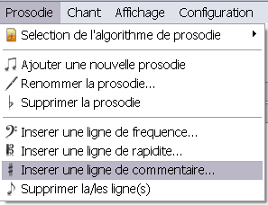
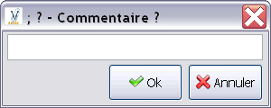

Pour insérer un commentaire dans une prosodie, il faut d'abord sélectionner une ligne d'insertion du commentaire. Puis, il faut cliquer sur Prosodie > Inserer une ligne de commentaire...

Le logiciel vous demande alors le commentaire à insérer

Si vous cliquez sur Ok le commentaire est inséré.